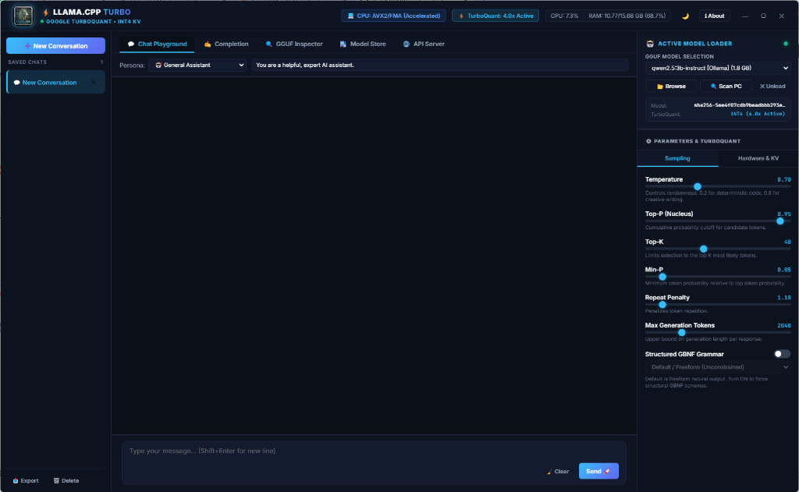

Run Massive Local LLMs on
Windows, Linux & macOS with 4x KV Compression
A state-of-the-art standalone cross-platform desktop application powered by llama-cpp-python, Google TurboQuant, and Electron. Complete with structured reasoning accordions, Hugging Face Model Store, GGUF binary inspection, and a local OpenAI-compatible API server. Accelerated by NVIDIA CUDA, AMD Vulkan, Apple Silicon Metal, and AVX2 SIMD.
curl -fsSL https://raw.githubusercontent.com/Protik1810/llamacpp-turbo/main/install.sh | bash

Engineered for Elite Local Intelligence
Designed from the ground up to overcome the VRAM ceiling, eliminate latency, and make local AI effortlessly productive.
Google TurboQuant INT4 KV Cache
Compresses attention key-value caches from 16-bit to 4-bit / 2-bit with randomized Fast Walsh-Hadamard outlier suppression, unlocking up to 4x longer context windows without VRAM overflow.
Intelligent Discrete GPU Routing
Auto-detects dedicated NVIDIA (CUDA) and AMD / Intel (Vulkan) GPUs for full tensor layer offloading, with automatic seamless fallback to multi-threaded CPU SIMD (AVX2/FMA) for integrated graphics.
Structured Chain-of-Thought
Real-time token parser extracts reasoning tokens from DeepSeek-R1, QwQ, Gemma, and Llama 3 into collapsible, glowing glassmorphic thought accordions with live generation speed telemetry.
Universal PC Model Scanner
Multi-threaded storage crawler automatically searches across all internal and external drives, Ollama caches, LM Studio, and Hugging Face directories to instantly discover all GGUF models.
Hugging Face Model Store
Browse, search, and download top quantized GGUF weights directly from Hugging Face Hub with real-time multi-threaded chunk streaming, speedometers, and sha256 checksum verification.
Local OpenAI-Compatible API
Built-in high-speed FastAPI server running on port 8008 provides standard
/v1/chat/completions and /v1/models endpoints ready for Cursor, Continue,
LangChain, and AutoGen.
How Google TurboQuant™ Slashes KV Memory
By rotating activation vectors via Fast Walsh-Hadamard Transform (FWHT), TurboQuant eliminates cross-channel outliers before low-bit quantization.
Fast Walsh-Hadamard Transform
Applies an orthogonal rotation matrix $H_d$ along the head dimension $d$. This diffuses concentrated activation energy uniformly across all dimensions.
Asymmetric INT4/INT2 Packing
Quantizes the uniformly distributed components into 4-bit or 2-bit integer indices with per-block scale and zero-point vectors, reducing VRAM by 75% to 87.5%.
Streaming Token Sparsity Budget
Identifies transient middle-context tokens with low cumulative attention weights, offloading them to unlock up to 5.0x effective compression.
TurboQuant VRAM & Speedup Calculator
Select your target model and context window to calculate instant KV cache memory savings and memory bandwidth speedups.
TurboQuant vs Standard Inference
KV Cache memory consumption and token throughput across 8K-32K context lengths.
| Model Architecture | Context Length | Standard FP16 KV | TurboQuant INT8 KV | TurboQuant INT4 KV (Active) | Memory Saved |
|---|---|---|---|---|---|
| Llama-3.3-70B-Instruct | 16,384 tokens | 10.24 GB VRAM | 5.12 GB VRAM | 2.56 GB VRAM | 75.0% (4x) |
| DeepSeek-R1-Distill-Qwen-32B | 32,768 tokens | 8.60 GB VRAM | 4.30 GB VRAM | 2.15 GB VRAM | 75.0% (4x) |
| Qwen-2.5-Coder-14B | 32,768 tokens | 5.40 GB VRAM | 2.70 GB VRAM | 1.35 GB VRAM | 75.0% (4x) |
| Gemma-2-9B-IT | 8,192 tokens | 2.10 GB VRAM | 1.05 GB VRAM | 0.52 GB VRAM | 75.2% (4x) |
| Meta-Llama-3.1-8B | 32,768 tokens | 4.10 GB VRAM | 2.05 GB VRAM | 1.02 GB VRAM | 75.0% (4x) |
Built-In OpenAI-Compatible API Server
Connect Cursor, Continue, LangChain, or custom Python & cURL scripts directly to your local desktop engine on port 8008.
import openai
client = openai.OpenAI(
base_url="http://localhost:8008/v1",
api_key="not-needed" # Local offline engine
)
# Live streaming with thinking tag extraction
response = client.chat.completions.create(
model="local-model",
messages=[
{"role": "system", "content": "You are an expert AI assistant."},
{"role": "user", "content": "Write a fast Python quicksort with detailed reasoning."}
],
temperature=0.7,
stream=True
)
for chunk in response:
content = chunk.choices[0].delta.content or ""
print(content, end="", flush=True)Obsidian Dark & Clean Studio Light Themes
Seamless one-click theme switching between sleek midnight obsidian for night sessions and high-contrast studio light for day coding.
Active Chat & Parameter Controls
Precise temperature, top-p, top-k, min-p, repeat penalty sliders, and structured GBNF schema enforcement.
Architecture & Verified Contributor Modal
Direct view of engine telemetry, TurboQuant outlier suppression parameters, and project lead verification.
Crafted by Protik Das
Primary Contributor & Original Creator of Llama.cpp Turbo Desktop.
 👑
👑
Protik Das Lead Architect
Architect of the standalone Llama.cpp Turbo platform, integrating Google TurboQuant randomized Fast Walsh-Hadamard KV compression, discrete GPU scheduling, and cross-platform desktop UI.
Ready to Experience Turbocharged Local AI?
Download the official Windows Setup installer or install instantly via Linux/macOS terminal with zero cloud dependency.
git clone https://github.com/Protik1810/llamacpp-turbo.git && ./run.sh